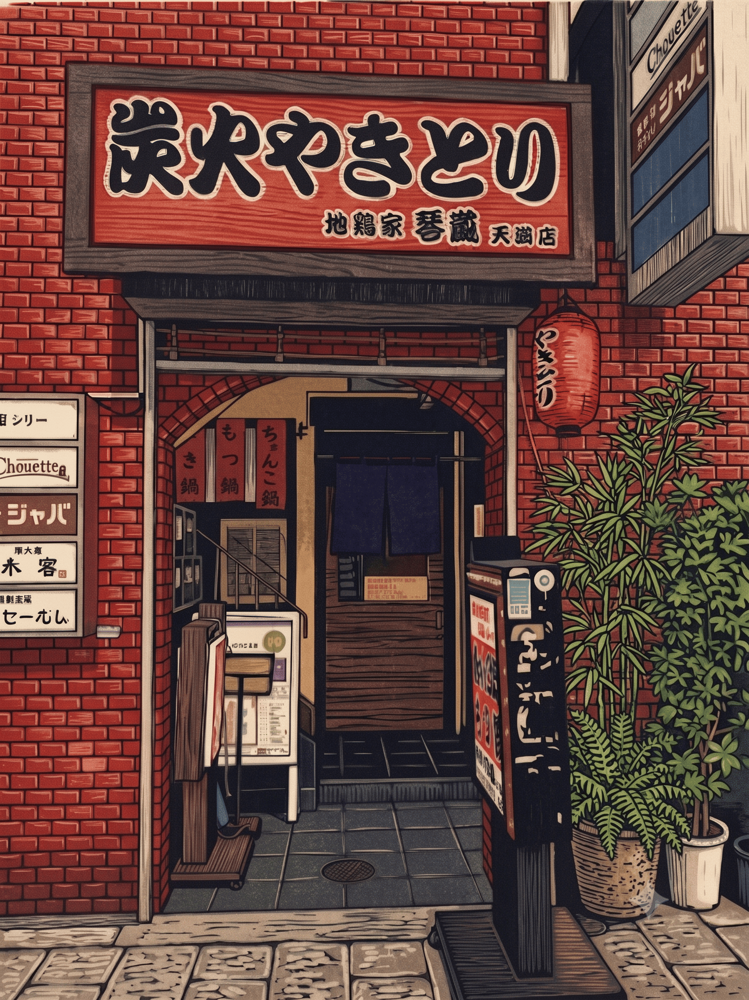
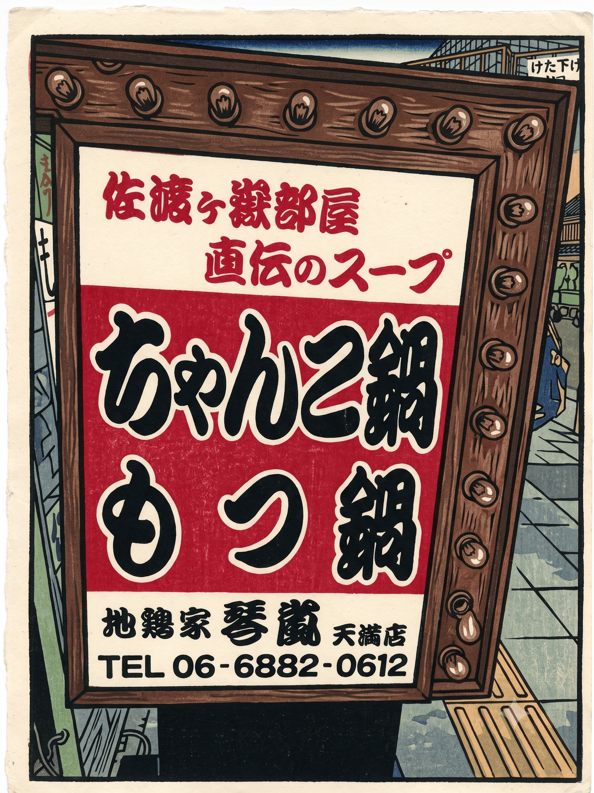
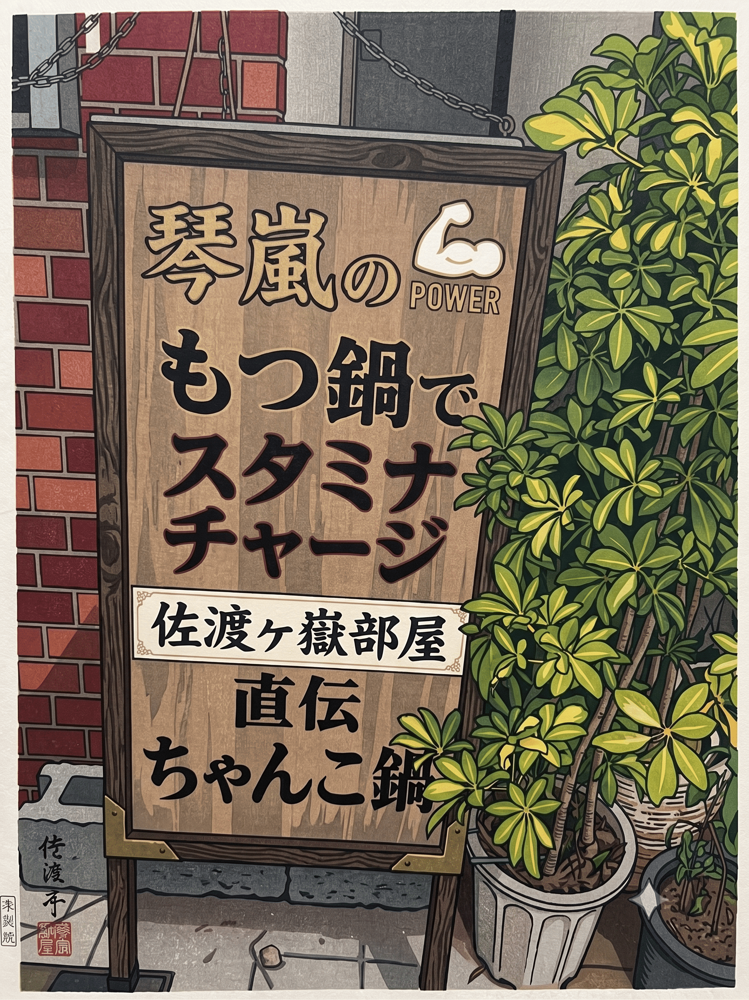

暖簾の先に、佐渡ヶ嶽部屋直伝の味が待っている。

鶏ガラをふんだんに使い、じっくりと炊き出したコクのあるスープ。一口飲めば体に染み渡る、本物のちゃんこ・もつ鍋をどうぞ。

同期には錚々たるメンバー。お相撲さんしか知らない「本物の味」と「世界の話」を、美味しいお酒と共にお楽しみいただけます。
※〆の雑炊・ラーメン（各530円）、リゾット（590円※塩のみ）もございます。
📍 〒530-0041 大阪府大阪市北区天神橋４丁目１０−５ 上野ビル
🚉 天神橋筋六丁目駅・天満駅から徒歩すぐ
📞 06-6882-0612